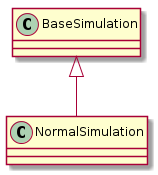

This creates data that is normally distributed.
normal.pdf |

NormalSimulation |
|
NormalSimulation.ideal_solution |
|
NormalSimulation.nearest_domain_index |
|
NormalSimulation.domain |
|
NormalSimulation.range |
|
NormalSimulation.__call__ |
It is just a front-end for scipy.stats, and can be used to simulate various unimodal cases.
if IN_PWEAVE:
simulator = NormalSimulation(domain_start=-4, domain_end=4, steps=1000)
To create the needle in a haystack scenario, you can widen the domain to the point that it becomes rare to find the center.
if IN_PWEAVE:
simulator = NormalSimulation(domain_start=-100, domain_end=150, steps=1
000)
The NormalSimulation produces a unimodal distribution, to make a noisy distribution, values can be randomly chosen from the distribution and other functions added to the output (which is what we’re doing here).
norm.rvs |
NoisySimulation |
if IN_PWEAVE:
squared = lambda x: scipy.power(x, 2)
sine = lambda x: scipy.sin(x)
noisy = NoisySimulation(domain_start=0, domain_end=100, steps=1000,
functions=[squared, sine])
The same idea that was used to alter the noisy data can also be used to alter the normal distribution to create something multimodal.
if IN_PWEAVE:
cosine_squared = lambda x: scipy.cos(x)**2
sine = lambda x: -scipy.sin(x)
simulator = NormalSimulation(domain_start=-4,
domain_end=4.1,
steps=1000,
functions=[cosine_squared, sine])
The functions are being applied to the domain then added to the range, so adding a function that multiplies the values will give you a straight line. Instead you have to apply the function to the range outside of the NormalSimulation. Adding values will raise the curve (or lower it if the value is negative) and multiplying values will make the curve taller.
In the example below multipyling the range by 10 changes the peak of the curve from about 0.4 to about 4, then adding 2 shifts it up to about 6.
if IN_PWEAVE:
simulator._range = None
simulator.functions = None
new_range = (simulator.range * 10) + 2